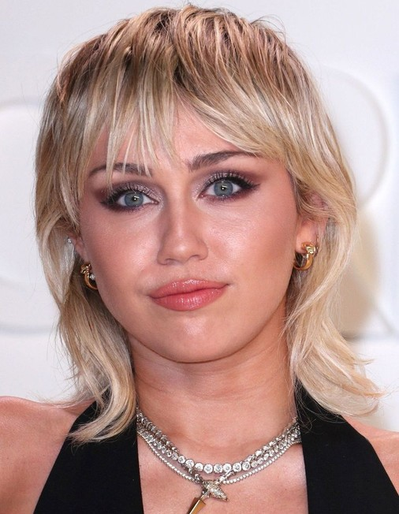

International Singers
Eric Nam was born on November 17, 1988 from Atlanta Georgia is an American singer-songwriter and television host of Korean variety show. His songs include “Congratulations”, “Runaway”, “Can't help myself”. He was also part of the We Got Married that was aSouth Korean reality variety show were celebrities paired up to be married couples. He was withkpop girl group Mamamoo Solar together acting up as his wife.
Furthermore, Eric discharged the tune Float, which he co-wrote with the maker Kool Kojak. Kojak has delivered for specialists such as Katy Perry, Flo Rida, Kesha, and Nicki Minaj. The tune was picked up by Sony Pictures and highlighted within the official soundtrack for the motion picture Inn Transylvania 3: Summer Get-away. Upon discharge, the motion picture was number one at the US box office. Eric moreover highlighted on a remix for "Your Side of the Bed" with Island Records pop pair Loote. On July 21, 2018, Eric performed at We The Fest in Jakarta, Indonesia. He was the as it were Korean act on the lineup,and performed along acts such as Lorde, James Inlet, Miguel, SZA, and ODESZA.
Lee Ji-eun was born on May 16, 1993, known as IU is a South Korean singer-songwriter and actress. She started being a singer at the age of 15 Her song "Good Day" stayed five consecutive weeks at the top position of South Korea's Gaon Digital Chart. In 2019, it was ranked as number one on Billboard's "100 Greatest K-Pop Songs of the 2010s" list. “Celebrity”, “Blueming”, “Eight”, “BBIBBI” have also won from various music shows. She is one of the top singers in Korea industry and continues to be remarkable in her career. She was also a female lead actress in the successful k-drama series Hotel Del Luna.
IU has discharged a add up to of five studio collections and nine expanded plays in her career, scoring three number-one collections and twenty-six number-one singles on the Gaon Music Charts. One of the best-selling solo acts within the group-dominated K-pop industry, she has been included on Forbes magazine's yearly Korea Control Celebrity list since 2012 and come to a crest positioning of number three that year. Billboard recognized IU as the all-time pioneer of its Korea K-pop Hot 100 chart with the foremost number-one tunes and the artist who has held the number-one position for the foremost weeks. Agreeing to a Gallup Korea overview, she was the foremost prevalent symbol and craftsman among South Koreans in 2017.
Park Jae-sang was born on December 31, 1977officially known as Psy is a singer-songwriter, producer and rapper. He made history when later acknowledged by the media as the "King of YouTube". In 2014, the music video for Psy's "Gangnam Style" hit two billion views. It is the eighth most viewed video on YouTube, having 3.8 billion views.
In December 2012, MTV famous Psy's rise from being small known exterior South Korea, to being hailed as the "Viral Star of 2012". On December 31, 2012, Psy performed in a all inclusive broadcast Modern Year's Eve celebration with American rapper MC Pound on-stage before a live gathering of people of over a million individuals in Times Square, Modern York City.
Kim Hyun-ah known as Hyuna, is a South Korean singer-songwriter, rapper and model. She is a former 4 minutegroup member under cube entertainment. She was recognized in the public for her single “Bubble pop” and has sold more than three million digital albums and became the first female artist to achieve 100 million views on YouTube.
In 2018, Hyuna finished her contract with 3d shape Amusement after a few inner clashes, and marked with Psy's P Country the taking after year. Her to begin with computerized single beneath P Country "Blossom Shower" got to be her seventh top-ten passage on the US Announcement World Advanced Melody Deals. In 2021, Hyuna discharged her seventh amplified play I'm Not Cool.
Kwon Ji-yong popularly known as G-Dragon, is a South Korean rapper, singer-songwriter, record producer and the "King of K-pop". He is under YG Entertainment and a member of the established and record breaking band which is Bigbang. His first solo album Heartbreaker that was released in 2009, were hugely successful, becoming the best-selling album by a Korean soloist at the time and awarded him Album of the Year at the 2009 Mnet Asian Music Awards or known as MAMA which one of the biggest awards that an artist could obtain.
Broadly recognized for hisimpact on youth culture, design patterns, and music in South Korea, G-Dragon was named by Forbes in 2016 as the foremost compelling individual beneath 30 in Asia's amusement and sports. G-Dragon has composed or co-written 23 number one melodies on the Gaon Digital Chart (comparable to the Billboard Hot 100), most of which he has too co-produced.
Taylor Alison Swift was born on December 13, 1989 is an American singer-songwriter. Her famous compositions that made her well-known were ”You belong with me”, “Love Story”, “Blank space”, “Cardigan”, “Bad blood”, “Teardrops of my guitar”and many more. She started being an artist from 2004 until now. She was one of the top international singers in the whole world known for her singing capabilities and narrative writing composition of the songs.
Swift has sold over 50 million collections, counting 37.3 million within the U.S., and 150 million singles around the world. She has amassed more than 97 million units in worldwide collection utilization, counting 54 billion streams, as of February 2020.In 2019, Bulletin set her eighth on its Most noteworthy of All Time Specialists Chart. Quick is the longest-reigning act of Announcement Craftsman 100 with 44 weeks at number one on the chart, the lady with the foremost aggregate weeks (50)atop the Billboard 200, the lady with the foremost Billboard Hot 100 passages in history (129), and the craftsman with the foremost number-one singles on Computerized Melodies chart (22).
Selena Gomez is an American singer,actress, and producer. She was born on July 22, 1992 and raised in Texas, her career by appearing on the children's television series Barney & Friends. Her songs include “Lose you to love me”, “Come and get it”, “Tell me something I don’t know” and many more.
As of 2017, Gomez has sold over seven million collections and 22 million singles around the world, agreeing to Bulletin. She has gotten different awards and was honored as the Announcement Lady of the Year in 2017. She features a huge taking after on social media, and was at one point the most-followed person on Instagram. Gomez's other wanders incorporate a cosmetics line, a clothing line, a satchel line, a scent line, and a generation company named July Moonhead Preparations. She has worked with different charitable organizations and, at age 17, she was designated a UNICEF minister.
Onika Tanya Maraj-Petty was born on December 8, 1982, better known as Nicki Minaj is a Trinidadian-born rapper, artist, musician, performing artist, philanthropist, and model. Her top and famous songs include “Starship”, “Bang bang”, “Super Bass” a collaboration with Justin Bieeber “Beauty and the beat”. Her songs were remarkable and have entered hot 10 and entered top five charts in other countries.
Cited as one of the foremost persuasive and best offering female rap artists of all time, Minaj has gotten various honors all through her career, counting six American Music Awards, twelve Wagered Grants, four MTV Video Music Awards, four Bulletin Music Awards, and two Announcement Ladies in Music Grants. She has moreover been assigned for 10 Grammy Awards. Minaj was the highest-ranked female rapper on Billboard's list of the beat specialists of the 2010s. In 2016, Minaj was included on the yearly Time list of the 100 most compelling individuals within the world

Miley Ray Cyrus is a singer-songwriter and actress. She appeared on the disney channel television series on Hannah Montana. Her songs included the lead single "Midnight Sky". Her other singles include the US top ten-charting "Party in the U.S.A.", "See You Again", "The Climb", "7 Things", "Can't Be Tamed", "We Can't Stop", "Malibu" and the chart-topping "Wrecking Ball". "Party in the U.S.A." was certified Diamond by the Recording Industry Association of America.
Cyrus's career accolades include entries on the Time 100 list in 2008 and 2014, MTV's Best Artist of 2013 Award, and placement on Billboard's Greatest of All Time ArtistsChart in 2019. She is often regarded as one of the few examples of successful child actors-turned-singers.As an actress, Cyrus has made appearances in the animated film Bolt (2008) and the feature films Hannah Montana:The Movie (2009) and The Last Song (2010). On television, Cyrus served as a coach on the singing competition series The Voice across two seasons and starred in an episode of the Netflix series Black Mirror (2019).
Justin Drew Bieber was born on March 1, 1994 is a Canadian singer-songwriter and multi-instrumentalist. His works include “Boyfriend”, “Love yourself”, “Lonely”, “Baby”, “What do you mean” and more songs that he produced were also successful. He was the very first artist from VEVO to reach 10 billion views on his music video and also to have seven songs that are in the Billboard hot 100.
Among the world's best-selling music artists, with over 150 million records sold, Bieber has gotten Precious stone certifications from the RIAA for "Child" and "Too bad". He has gotten various awards, counting two Grammy Awards, a record 21 MTV Europe Music Awards, 20 Billboard Music Awards, 18 American Music Grants, two Brit Awards, four MTV Video Music Awards, and a Latin Grammy Award. Time named Bieber one of the 100 most compelling individuals within the world in 2011, and he was included on Forbes' list of the best ten most effective celebrities in 2011, 2012, and 2013.
{kind=link}
{kind=link}
{kind=link}
{kind=link}
{kind=link}
{kind=link}
{kind=link}
{kind=link}
{kind=link}